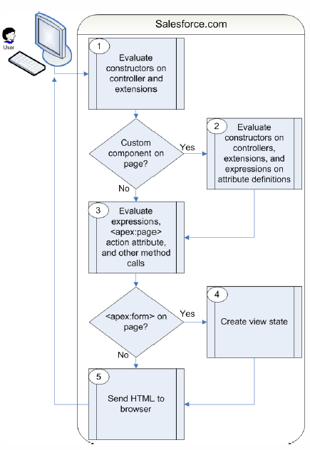

■Visualforceページ内実行順序
【get要求】
get要求は、ユーザがURLを入力したとき、またはユーザが新しいページに移動する
リンクやボタンがクリックされたときに発行される最初のページ要求。

-
関連するカスタムコントローラ、または拡張コントローラのコンストラクタが実行され、
コントローラがインスタンス化される。
-
ページにカスタムコンポーネントが含まれている場合、そのコンポーネントが作成され、
関連するカスタムコントローラ、または拡張コントローラのコンストラクタが実行され、
コントローラがインスタンス化され、式({!})を使用した属性が評価される。
-
カスタムコンポーネントのassingToメソッドを実行後、actionメソッドを実行する。
最後にプロパティ値を設定し、すべてのメソッドが実行される。
-
apex:formコンポーネントが含まれている場合、暗号化されたビューステートが生成される。
ビューステートはページが更新されるたびに更新される。
-
生成されたHTMLがブラウザに送信され、JavaScriptなどのクライアント側処理が実行される。
ユーザがページを操作すると、ページはaction、getter、setterメソッドを実行する。
ユーザによって新しいget要求が発行されると、ビューステートと
コントローラオブジェクトは削除される。
【postback要求】
postback要求は、ユーザの操作によってページ更新が必要になった場合に発行される。

-
postback要求時にビューステートは復号化される。
immediate属性がtrueに設定されたコンポーネントでは、
このフェーズが省略される(アクションは実行されるが、
入力に対する検証は実行されず、ページでのデータ変更は行われない)。
-
式が評価され、コントローラと拡張コントローラのsetterメソッドが実行される。
すべてのsetterメソッドが正常に実行されない限り、データが更新されることはない。
-
postback要求をトリガしたアクションが実行される。アクションが正常に完了すると、
データが更新される。postback要求によってユーザが同じページに戻ると、
ビューステートが更新されている。
-
生成されたHTMLがブラウザに送信される。
postback要求でリダイレクトが指定されており、そのリダイレクト先が
リダイレクト元と同じコントローラか、拡張コントローラのサブセットを使用するページである場合、
postback要求がそのページに対して実行される。
リダイレクト先がそのようなページでない場合、get要求が実行される。
pageReferenceのsetRedirectがtrueに設定されている場合、get要求が実行される。
pageReferenceのsetRedirectをfalseに設定しても、リダイレクト先が同じコントローラ、
もしくは拡張コントローラのサブセットを使用していないとget要求が実行される。
ユーザが別のページにリダイレクトされると、ビューステートとコントローラオブジェクトは
削除される。